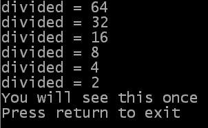

Repeat
; Instructions to execute during the loop
Until <expression>
The operation of a Repeat...Until loop is that the instructions inside the loop are executed and then the value of the expression is calculated. If this value is true then the loop exits and the program continues executing from the next instruction after the Until keyword. If the value of the expression is false then the loop repeats. The overall working of this loop can be thought of as repeating a sequence of instructions until something happens. Notice that the instructions inside the loop are always executed at least once.
The examples below different ways to use the Repeat...Until loops, which you can also download from here.
If OpenConsole()
divided.l = 64
Repeat
PrintN("divided = "+Str(divided))
divided = divided / 2
Until divided = 1
Repeat
PrintN("You will see this once")
Until 1
PrintN("Press return to exit")
Input()
CloseConsole()
EndIf
End
 As you can see from the example output on the right, the last variable value to be printed is 2. This is because the value is printed and then divided by 2 (giving 1). The Repeat loop exits when the value of the variable is 1, and because the expression check is performed at the end of the loop, it is exited here.
The second Repeat...Until loop in that example shows the position that the expression is checked. The loop exits when the expression, 1, is true (and since 1 is non-zero it is true, meaning that the loop will exit on the first iteration). As you can see from the example output, the print instruction is executed before the loop is exited meaning that the expression check must come after the PrintN command, i.e. at the end of the loop. This is the opposite from the Wile...Wend loop.
| Previous topic | Chapter contents | Next topic |
|---|---|---|
| Repeating instructions while something is happening | User Guide contents | Exiting loops early |